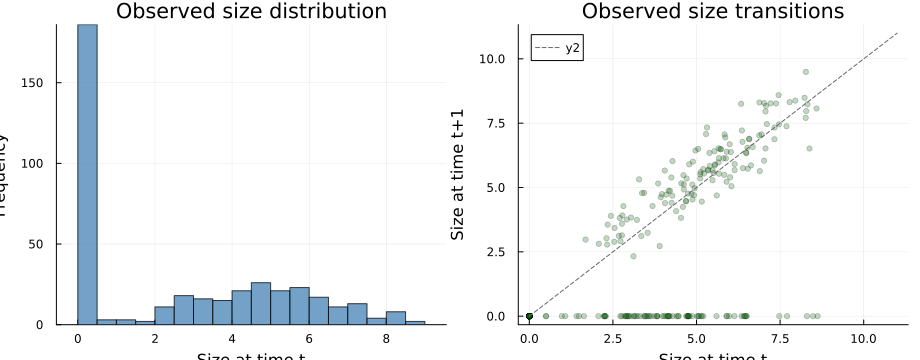

Overview
Structured population analyses usually begin with messy longitudinal census data rather than a tidy transition table. VitalRateModels.jl includes lightweight helpers for moving from raw monitoring records to a format suitable for fitting vital rates.
This vignette demonstrates a simple workflow:
- simulate five annual censuses for 100 individuals,
- convert wide data to transition-format data with
verticalize(), - define stage bins with
create_stageframe(), - run basic quality control with
validate_demographic_data(), and - summarize the resulting transitions.
Setup
using VitalRateModels, DataFrames, StatsModels, Distributions, Plots
using Random
Random.seed!(2030)Random.TaskLocalRNG()Simulating a five-year census
Each row in the wide table represents one marked individual. We keep size as 0.0 after death so that each census interval still has an explicit fate.
n_individuals = 100
n_years = 5
sizes = fill(0.0, n_individuals, n_years)
fates = fill(0, n_individuals, n_years - 1)
fecs = fill(0, n_individuals, n_years - 1)
sizes[:, 1] .= clamp.(rand(Normal(4.0, 1.6), n_individuals), 0.5, 9.0)
for i in 1:n_individuals
alive = true
for t in 1:(n_years - 1)
if alive
z = sizes[i, t]
surv_prob = 1 / (1 + exp(-(-2.0 + 0.5 * z)))
alive = rand(Bernoulli(surv_prob)) == 1
fates[i, t] = alive ? 1 : 0
if alive
sizes[i, t + 1] = clamp(rand(Normal(0.9 + 0.9 * z, 0.7)), 0.5, 11.0)
fecs[i, t] = rand(Poisson(exp(-4.2 + 0.45 * z)))
else
sizes[i, t + 1] = 0.0
fecs[i, t] = 0
end
else
sizes[i, t + 1] = 0.0
fates[i, t] = 0
fecs[i, t] = 0
end
end
end
wide = DataFrame(id=1:n_individuals)
for t in 1:n_years
wide[!, Symbol("size_y$(t)")] = sizes[:, t]
end
for t in 1:(n_years - 1)
wide[!, Symbol("fate_y$(t)_y$(t+1)")] = fates[:, t]
wide[!, Symbol("fec_y$(t)")] = fecs[:, t]
end
first(wide, 6)| Row | id | size_y1 | size_y2 | size_y3 | size_y4 | size_y5 | fate_y1_y2 | fec_y1 | fate_y2_y3 | fec_y2 | fate_y3_y4 | fec_y3 | fate_y4_y5 | fec_y4 |
|---|---|---|---|---|---|---|---|---|---|---|---|---|---|---|
| Int64 | Float64 | Float64 | Float64 | Float64 | Float64 | Int64 | Int64 | Int64 | Int64 | Int64 | Int64 | Int64 | Int64 | |
| 1 | 1 | 6.53059 | 5.72959 | 6.48832 | 6.33538 | 8.25235 | 1 | 0 | 1 | 1 | 1 | 1 | 1 | 1 |
| 2 | 2 | 4.05903 | 4.39218 | 4.08004 | 0.0 | 0.0 | 1 | 0 | 1 | 0 | 0 | 0 | 0 | 0 |
| 3 | 3 | 4.18721 | 0.0 | 0.0 | 0.0 | 0.0 | 0 | 0 | 0 | 0 | 0 | 0 | 0 | 0 |
| 4 | 4 | 4.54681 | 5.16101 | 0.0 | 0.0 | 0.0 | 1 | 0 | 0 | 0 | 0 | 0 | 0 | 0 |
| 5 | 5 | 3.46057 | 0.0 | 0.0 | 0.0 | 0.0 | 0 | 0 | 0 | 0 | 0 | 0 | 0 | 0 |
| 6 | 6 | 4.75562 | 0.0 | 0.0 | 0.0 | 0.0 | 0 | 0 | 0 | 0 | 0 | 0 | 0 | 0 |
Wide to long with verticalize()
For vital-rate fitting we usually want one row per transition $t \rightarrow t+1$.
size_cols = [Symbol("size_y$(t)") for t in 1:n_years]
fate_cols = [Symbol("fate_y$(t)_y$(t+1)") for t in 1:(n_years - 1)]
fec_cols = [Symbol("fec_y$(t)") for t in 1:(n_years - 1)]
long = verticalize(
wide;
id_col=:id,
size_cols=size_cols,
fate_cols=fate_cols,
fec_cols=fec_cols,
)
first(long, 8)| Row | individual | year | size_t | size_t1 | survived | fecundity |
|---|---|---|---|---|---|---|
| Int64 | Int64 | Float64 | Float64 | Bool | Float64 | |
| 1 | 1 | 1 | 6.53059 | 5.72959 | true | 0.0 |
| 2 | 1 | 2 | 5.72959 | 6.48832 | true | 1.0 |
| 3 | 1 | 3 | 6.48832 | 6.33538 | true | 1.0 |
| 4 | 1 | 4 | 6.33538 | 8.25235 | true | 1.0 |
| 5 | 2 | 1 | 4.05903 | 4.39218 | true | 0.0 |
| 6 | 2 | 2 | 4.39218 | 4.08004 | true | 0.0 |
| 7 | 2 | 3 | 4.08004 | 0.0 | false | 0.0 |
| 8 | 2 | 4 | 0.0 | 0.0 | false | 0.0 |
Defining stage boundaries
Even when the final analysis is continuous-state, stage bins are useful for summaries, exploratory plots, and coarse discretizations.
stageframe = create_stageframe(
stage_names=[:seedling, :small, :medium, :large, :flowering],
sizes=[0.5, 2.0, 4.5, 7.5, 10.0],
bin_halfwidths=[0.5, 0.8, 1.2, 1.3, 1.0],
reproductive=[false, false, false, false, true],
observable=[true, true, true, true, true],
)
stageframeStageFrame([:seedling, :small, :medium, :large, :flowering], [0.5, 2.0, 4.5, 7.5, 10.0], [0.5, 0.8, 1.2, 1.3, 1.0], Bool[0, 0, 0, 0, 1], Bool[1, 1, 1, 1, 1], Bool[1, 1, 1, 1, 1], Bool[0, 0, 0, 0, 0], Bool[0, 0, 0, 0, 0])A simple exploratory stage assignment can be made from the stage centroids.
centers = stageframe.sizes
labels = String.(stageframe.stage_names)
function nearest_stage(z, centers, labels)
labels[argmin(abs.(centers .- z))]
end
long.stage_t = [nearest_stage(z, centers, labels) for z in long.size_t]
combine(groupby(long, :stage_t), nrow => :n_transitions)| Row | stage_t | n_transitions |
|---|---|---|
| String | Int64 | |
| 1 | large | 55 |
| 2 | medium | 114 |
| 3 | seedling | 190 |
| 4 | small | 41 |
Quality control with validate_demographic_data()
valid = validate_demographic_data(long)
println("Validation passed? ", valid)✓ Data validation passed (400 observations)
Validation passed? trueExploratory transition summary
summarize_transitions(long)Demographic transition summary:
N transitions: 400
Size at t: min=0.0, max=8.622511727300543, mean=2.59
Size at t+1: min=0.0, max=9.491564826899586, mean=1.89
Survival: 0.335 (134/400)
Fecundity: mean=0.08, max=3.0p1 = histogram(
long.size_t,
bins=20,
xlabel="Size at time t",
ylabel="Frequency",
title="Observed size distribution",
color=:steelblue,
alpha=0.75,
label=false,
)
p2 = scatter(
long.size_t,
long.size_t1,
alpha=0.25,
ms=3,
xlabel="Size at time t",
ylabel="Size at time t+1",
title="Observed size transitions",
color=:darkgreen,
label=false,
)
plot!(p2, [0, 11], [0, 11], linestyle=:dash, color=:gray40)
p = plot(p1, p2, layout=(1, 2), size=(920, 360))
p
Summary
In this vignette we:
- created a realistic multi-year census table,
- converted it to transition data with
verticalize(), - defined stage bins with
create_stageframe(), - checked the data with
validate_demographic_data(), and - summarized and plotted the resulting transitions.
These steps usually come before any model fitting, and they are often where most of the practical demographic work happens.
References
- Caswell, H. (2001). Matrix Population Models. Sinauer.
- Ellner, S. P., Childs, D. Z., & Rees, M. (2016). Data-Driven Modelling of Structured Populations. Springer.
- Salguero-Gómez, R., et al. (2015). The COMPADRE Plant Matrix Database. Journal of Ecology, 103, 202-218.